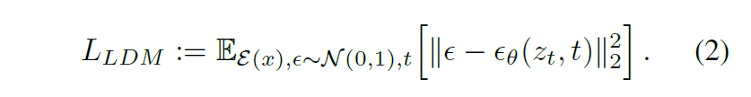
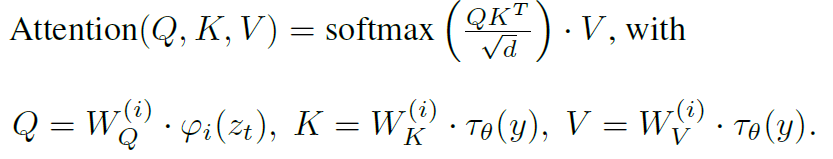
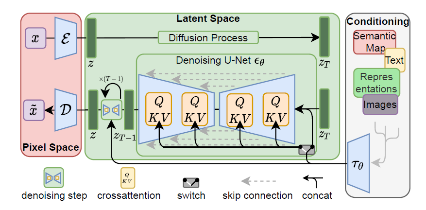

本文介绍了Stable Diffusion背后的原理（LDM），模型的微调方法（LoRA），以及一篇2023年的text-to-image工作（ControlNet）。
LDM
论文：High-Resolution Image Synthesis with Latent Diffusion Models (LDM)
Overview
Diffusion Model实现了非常好的生成效果，但是存在问题：直接在像素空间（维度高）上操作，优化很耗时间，推理也很消耗资源。
Key idea: 使用预训练的autoencoders，在latent space中训练模型。
Contributions:
- 高效地生成高分辨率的图像，加速训练和推理
- 通过加入cross-attention，可以进行更通用的条件生成，比如text-to-image。
Intro
基于似然的模型的学习过程可以被分成两步
- perceptual compression stage: 去除高频细节
- semantic compression stage: 实际上的生成模型，学习语义信息
目标：找到一个 perceptually equavalent 并且计算成本更低的空间
相应的，训练也分成两步
- autoencoder: 提供一个低维的表达空间（隐空间 latent space），并且和数据空间 perceptually equavalent；和其他工作最大的区别是LDM有很好的scaling properties，不需要空间压缩；图像生成也更快了，只需要经过一个神经网络；一个autoencoder可以被用于不同的任务
- 在latent space上训练diffusion model
相关工作
生成模型：GAN，likelihood-based methods (VAE, flow-based models, autoregressive models, diffusion models)
两阶段图像合成：之前的工作面临trade-off，压缩率高，表现差，压缩率低，计算成本高
Pipeline
Autoencoder：encoder将图像从RGB空间变换到latent space，是一个下采样过程；decoder将latents变换回RGB图像。
惩罚项的选择：
- KL-reg. 类似VAE
- VQ-reg. 在decoder中使用了向量量化层
LDM优化目标：LDM就是把DM的x变成了编码后的latent representations


Conditioning：针对多模态的输入，可以直接把向量拼接起来，也可以用cross-attention machanism，把UNet的中间层替换成cross-attention layer：

其中 $\tau_\theta$ 将条件输入映射成中间表示。
训练LDM的过程中，联合优化 $\epsilon_\theta, \tau_\theta$ 的参数：


LoRA
ControlNet
论文：Adding Conditional Control to Text-to-Image Diffusion Models